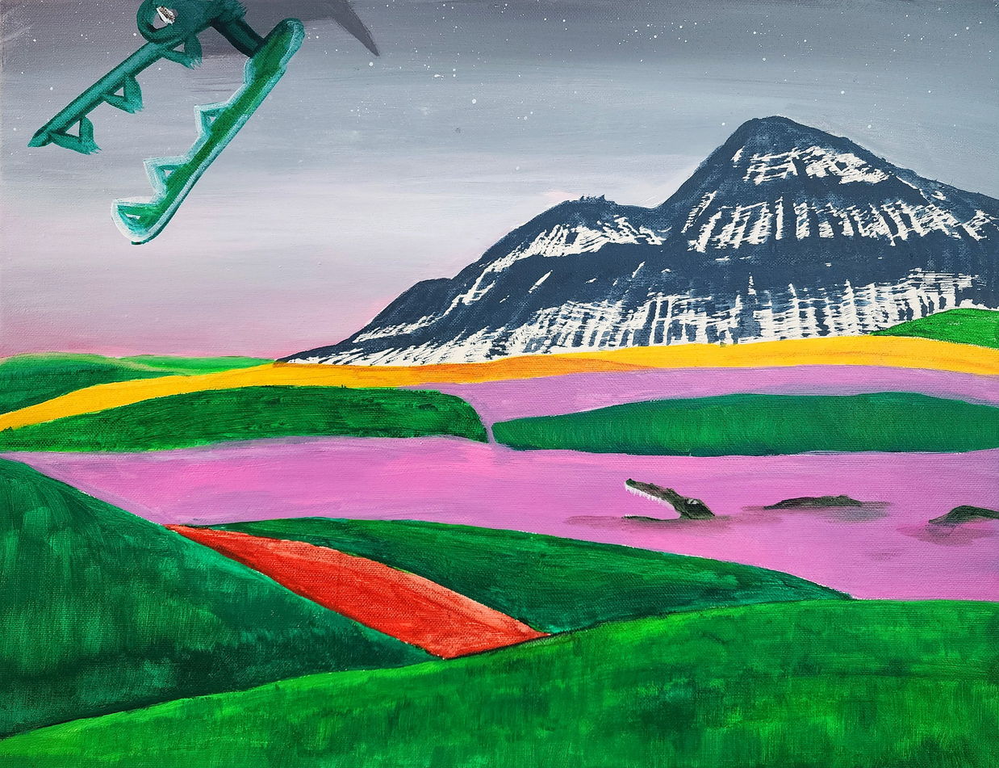

The Flatland Dream — 2025 Exhibition Recap

1. In this 25th exhibition, you collaborated with artist Kim Nayoon on “Lost Crocodile.” I’m curious why you chose this piece and what your first impression was when you encountered it.
I really love cute things. When I first saw “Lost Crocodile,” I felt this strange mix of loneliness and cuteness at the same time. The symbolic crocodile shape, which looks like it’s been dropped somewhere far away, reminded me a lot of the main character “Enaiatollah” from the book In the Sea There Are Crocodiles, which I happened to be reading repeatedly at the time. That similarity naturally drew me to the piece.
Although the drawing itself is quite simple, it feels like it carries a lot of emotion. That made me want to create a new interpretation through collaboration.
2. This must have been your first time doing this kind of collaborative drawing. What changed for you before and after the collaboration?
At first, I worried, “Will my style really match well with this artist’s work?” But once I actually started working, I found it incredibly enjoyable to see how our completely different expressive styles came together to create a new atmosphere.
In a way, stepping out of my own solo creative process and learning how to accept someone else’s perspective and emotions—and express them—brought a very real change to me.
3. What style of music do you usually enjoy? If you have any recommendations, please share one or two.
I usually listen to hip, rap, or R&B styles. I often listen to Leon Thomas’s Lucid Dreams, MUTT, Kendrick Lamar’s LOVE., and Haon Kim’s Skrr.
When I listen, I don’t think about anything in particular—I just let myself sink into whatever emotion the music brings.
4. Fall is deepening and winter is on the way. Is there anything you’d like to try once the cold season arrives?
There are a few books I want to read, so when winter comes, I’d like to sit at home peeling mandarins and finish them all. Recently I’ve been more interested in my future, so I also want to study more about that field. And I want to keep working out so I can grow stronger.
Honestly, besides those two things, I’m not sure. I’m already doing what I want to do, so every day feels satisfying. In colder seasons, I think I’ll sometimes go outside to run, or meet friends and spend time indoors diving deeper into the things I love.
5. Do you have a favorite celebrity or star?
I don’t particularly admire one specific person, but I do respect the mindset of great entrepreneurs. Their challenges, persistence, and ability to execute something massive always inspire me.
6. I heard you live in a dorm (boarding). What is the actual boarding experience like?
Boarding life has more good sides than I expected. At first it felt unfamiliar, but now spending time with friends has become a natural, big part of my day. There’s a caring and supportive atmosphere, so I rarely feel alone.
Since I have to manage my own lifestyle, I’ve developed a sense of responsibility, and the environment is well-suited for focusing on studying or personal projects. It’s a different kind of warmth from home, and I’m living here happily now.
7. What is a recent moment or event that made you especially happy?
Lately, almost every moment feels happy. Just being able to see friends—whom I can’t meet often when I’m in Seoul—is a huge joy. At school, spending time with friends is the most fun part of my day, and when I return to the dorm and work on the things I’m striving for, I feel another kind of happiness as I try to make them even better.
The book I’m reading these days also gives me a lot of joy. As I read, I keep becoming curious about new things—and that curiosity itself makes me happy.

1. 이번 25전시에서 김나윤 작가의 ‘길 잃은 악어’와 협업하게 되었는데, 이 작품을 선택한 이유와 처음 마주했을 때의 느낌이 궁금합니다.
저는 귀여운것을 굉장히 좋아합니다. ‘길 잃은 악어’를 처음 봤을때, 작품이 주는 묘한 고독함과 귀여움이 동시에 느껴졌어요. 특유 악어 모양의 상징이 어딘가에 떨어져있는 듯한 느낌이 제가 그림을 선택할때 당시 읽고 읽던 책 “In the sea there are crocodiles” 의 주인공 anaiatollah”와 굉장히 닮은 부분이 있다고 생각해서 자연스럽게 끌리게 되었습니다.
또한 그림 자체는 굉장히 단순하지만, 많은 감정이 담고 있는것처럼 느껴져, 협업을 통해 새로운해석을 만들어보고 싶다는 생각이 들었어요.
2. 이런 방식의 협업 드로잉은 처음이었을 텐데, 협업 전과 후에 본인에게 어떤 변화가 있었나요?
아주 처음에는 “과연 내 스타일이 이 작가의 그림과 잘 어울릴까?” 라는 걱정이 있었어요. 하지만 실제로 작업해보니 서로 다른 표현 방식이 만나 새로운 분위기를 만드는 경험이 굉장히 즐겁더라구요.
어떻게 보면 혼자만의 작업에서 잠깐 벗어나 다른 시선이랑 감정을 받아드리고 그 감정을 표현하는법을 배웠다는점에서 확실한 변화가있었어요.
3. 평소 즐겨 듣는 음악은 어떤 스타일인가요? 추천하고 싶은 곡이 있다면 한두 가지 소개해주세요.
평소에는 힙한 랩이나 R&B 스타일을 자주 들어요. Leon thomas의 lucid dreams 나 MUTT, Kendrick lamar 의 ‘LOVE.’, 그리고 김하온의 Skrr 를 자주 즐겨듣는것같네요.
들을땐 그냥 아무생각 없이 듣는것같아요. 그냥 노래가 가져다주는 감정에 몸을 맡기죠.
4. 가을이 깊어지고 곧 겨울이 오는데, 추운 계절이 되면 해보고 싶은 것이 있나요?
읽고 싶은 책들이 몇 권 있어서, 겨울이 오면 집에서 귤 까먹으면서 다 읽어보고 싶어요. 그리고 요즘은 제 미래에 대해 관심이 커져서, 그 분야에 대해 더 공부해보고 싶다는 생각도 들어요. 운동도 꾸준히 해서 더 커질려구요.
솔직히 이 두개 말곤 잘 모르겠네요. 지금 하고있는게 제가 하고싶은거라서 하루가 너무 마음에 들어요. 차가운 계절일수록 가끔 밖에 나가서 뛰기도 할거같고, 친구들과 만나서 따뜻한 실내에서 제가 좋아하는 것들을 깊게 파고들며 시간을 보내고 싶습니다.
5. 좋아하는 연예인이나 스타가 있다면 소개해주세요.
딱히 한 사람을 특별히 좋아한다기보다는, 저는 위대한 사업가들의 정신을 존경하는 편이에요. 거대한 무언가를 만들어내기까지의 도전, 끈기, 그리고 실행력 같은 부분이 늘 영감을 줍니다.
6. 기숙사(보딩) 생활을 하고 있다고 들었어요. 실제 보딩 생활은 어떤가요?
보딩 생활은 생각보다 좋은 점이 많아요. 아주 처음에는 낯설었지만, 지금은 친구들과 함께 지내는 시간이 자연스럽게 하루의 큰 부분이 되었어요. 서로 챙겨주고 도와주는 분위기가 있어서 혼자라는 느낌이 거의 없어요.
또 생활 패턴을 스스로 관리해야 하다 보니 책임감도 생기고, 공부나 개인 프로젝트에 집중할 수 있는 환경이 잘 갖춰져 있어요. 집과는 다른 따뜻함이 있어서, 지금은 행복하게 생활하고 있습니다.
7. 최근에 자신을 가장 행복하게 만든 순간이나 일이 있다면 무엇인가요?
요즘은 사실 거의 모든 순간이 행복하게 느껴져요. 서울에 있으면 자주 볼 수 없는 친구들을 눈앞에서 만날 수 있다는 것만으로도 큰 기쁨이에요. 학교에서는 친구들과 함께 보내는 시간이 가장 즐겁고, 기숙사에 돌아와서는 제가 노력하고 있는 일에 집중하면서 조금이라도 더 퀄리티 있게 만들려고 할 때 또 다른 행복을 느낍니다.
요즘 읽고 있는 책도 제게 큰 즐거움을 주고 있어요. 책을 읽다 보면 궁금한 것들이 더 많아지는데, 그 호기심 자체가 저를 행복하게 만들어주는 것 같아요.
